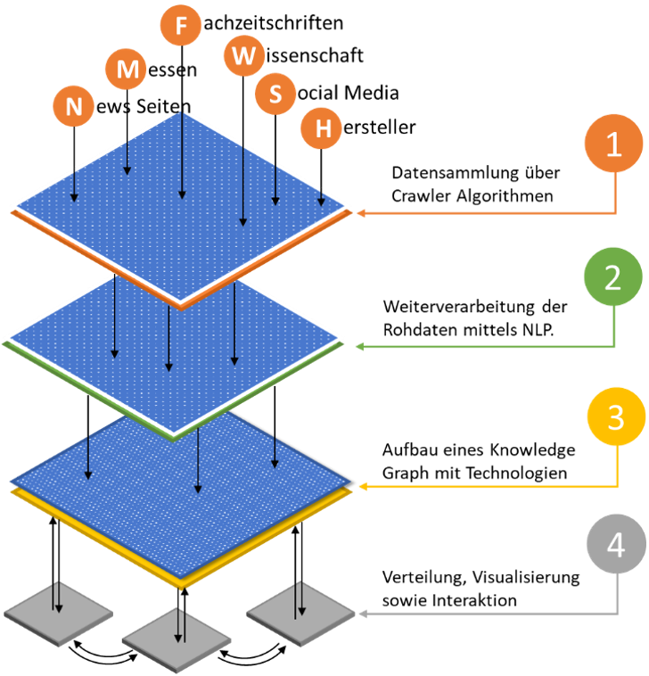
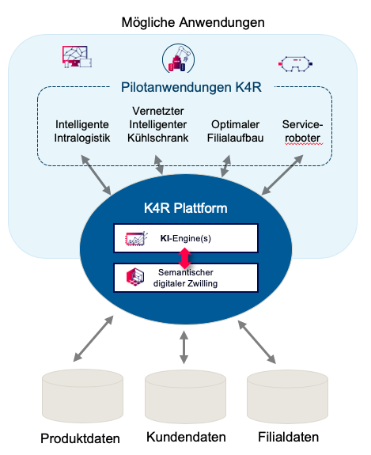
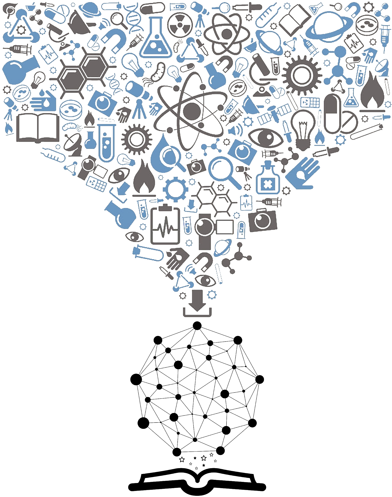

Due to the quantity and complexity of data (Big Data), the classical information gathering of engineers, for the search for technologies to solve problems in mechanical and plant engineering, no longer meets the requirements of a modern information society. This project aims to research AI-based processes that offer engineers a completely new possibility to find tailor-made solutions for their problems. For this purpose, natural language processing algorithms will be developed that semantically analyze large amounts of text, extract essential information and transfer it into an information model (knowledge graph) in order to capture and link problems and technologies. By means of matching, solutions for a wide range of problems can then be generated by engineers at the push of a button. More here...

"Knowledge4Retail" is a winning project of the "Künstliche Intelligenz als Treiber für volkswirtschaftlich relevante Ökosysteme" programme and thus funded by the Bundesministerium für Wirtschaft und Energie (BMWi). The goal of Knowledge4Retail is to advance the digitization of retail by developing a data platform that enables the combination of online and stationary retail, serves strategic marketing and makes digital solutions available for individual customer service using a semantic digital twin. More here...

Given that scientific knowledge usually is available in large quantities as unstructured texts, it is very difficult for researchers to obtain an overview of research fields or scientific domains. Similarly, it is difficult for researchers to gain insight into topics being researched at research institutions. Information about conducted research often only exists in unstructured texts on homepages or intranet pages. In addition, the websites are usually designed according to organizational structures of research institutions rather than a logical structure based on research areas. Therefore, a research area based navigation through the instutution websites is hardly possible. This makes exploration and navigation of topics being researched in an institution very difficult for external as well as for internal users. Structuring the scientific knowledge of research institutions and linking semantically related scientific domains offers researchers the potential for enhanced exploration of research areas. More here...